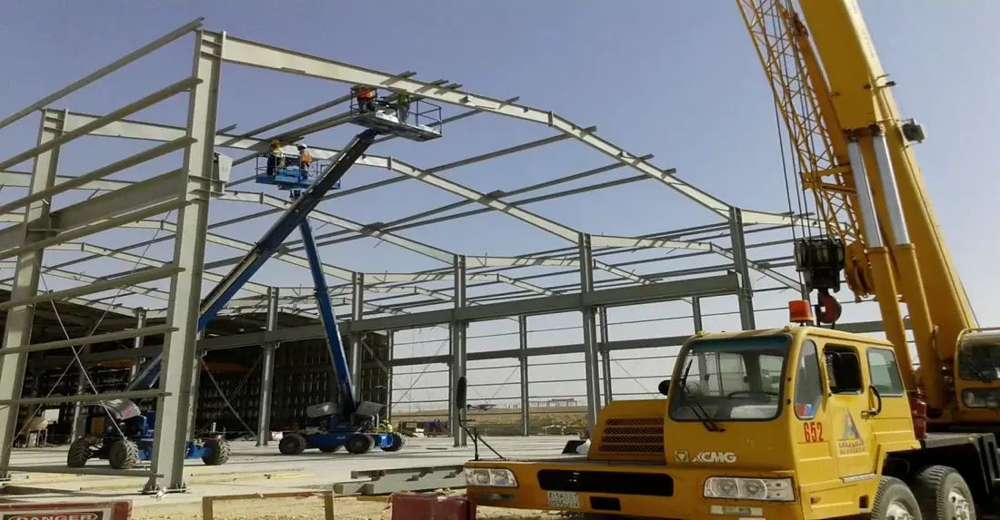
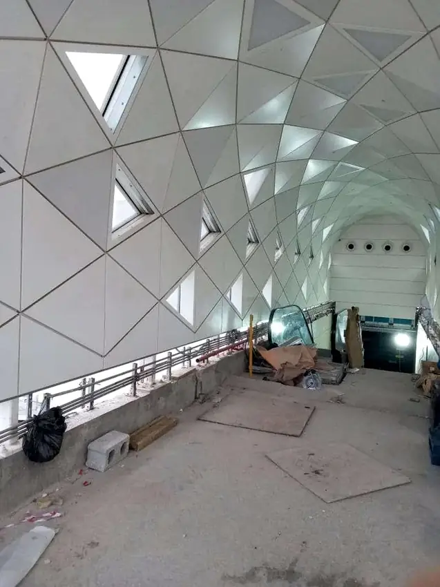
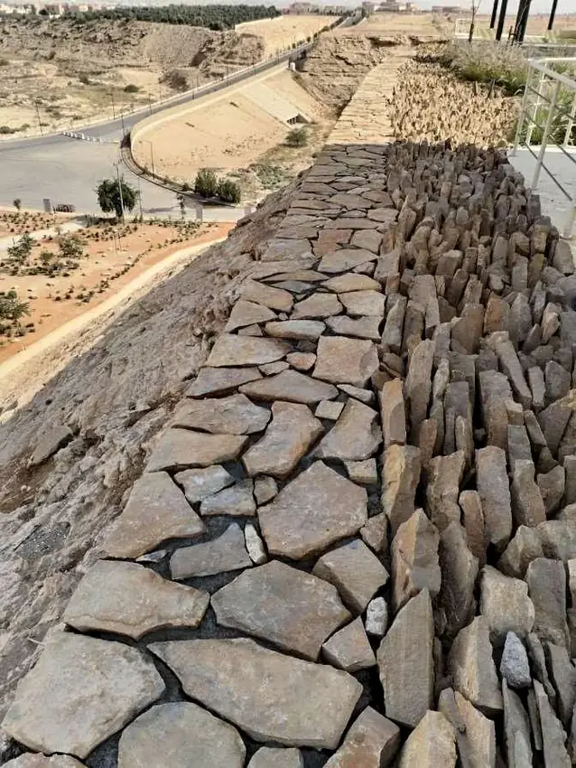

01
الأعمال الخرسانية
تنفيذ العناصر الخرسانية وأعمال الإنشاء وفق متطلبات المشروع.
من الخرسانة والهياكل المعدنية إلى التشطيبات والطرق وتنسيق المواقع، نحوّل خطط المشاريع إلى أعمال تُنجز بدقة وثقة.


نعرف أن قوة المشروع تبدأ من التفاصيل التي لا تُرى.

أسود نجد مؤسسة مقاولات عامة تأسست في الرياض عام 2022، وتقدم خدمات التنفيذ للمشروعات الإنشائية والبنية التحتية والأعمال التخصصية.
نمت خبرتنا عبر العمل ضمن مشاريع متنوعة تشمل أعمال الخرسانة، والهياكل الحديدية، والطرق، والتشطيبات الداخلية، وتنسيق المواقع. نركز على جودة الإنجاز والتنسيق الميداني والالتزام بمتطلبات كل مشروع.
تعرّف على مجالات عملناخبرات عملية في منظومة مترابطة من أعمال الإنشاءات والبنية التحتية والتجهيز.
تنفيذ العناصر الخرسانية وأعمال الإنشاء وفق متطلبات المشروع.
أعمال الحديد الإنشائي والتركيبات والهياكل الفولاذية.
تشطيبات داخلية وتجديد وتجهيز المساحات والمرافق.
أعمال الطرق، التهيئة، والمسطحات الخارجية للمشروعات.
اللاندسكيب، المسارات الخارجية، وتحسين بيئة المواقع.
الجودة ليست مرحلة أخيرة.
إنها طريقة عمل.
مختارات من صور ومشروعات الأعمال المدرجة في ملف الشركة، مع تحديد نطاق التنفيذ لكل مشروع.
صور المشروعات من ملف أسود نجد المقدم. بعض الأعمال نُفذت بصفة مقاول باطن ضمن مشروعات لمقاولين رئيسيين. صور المشاريع ذات الطبيعة السرية غير منشورة هنا.
ندرس متطلبات كل نطاق عمل، وننسّق مع أطراف المشروع، ونتابع التنفيذ حتى التسليم.
تواصل لمناقشة نطاق الأعمالفهم نطاق الأعمال والمواصفات والأولويات التنفيذية.
تنظيم الموارد ومراحل التنفيذ والتنسيق الموقعي.
متابعة الأعمال والالتزام بمتطلبات الجودة والسلامة.
التحقق من المخرجات والتنسيق لإتمام التسليم.
سواء كنت مطورًا أو مقاولًا رئيسيًا أو صاحب مشروع، يسعدنا مناقشة نطاق العمل وفرص التعاون.